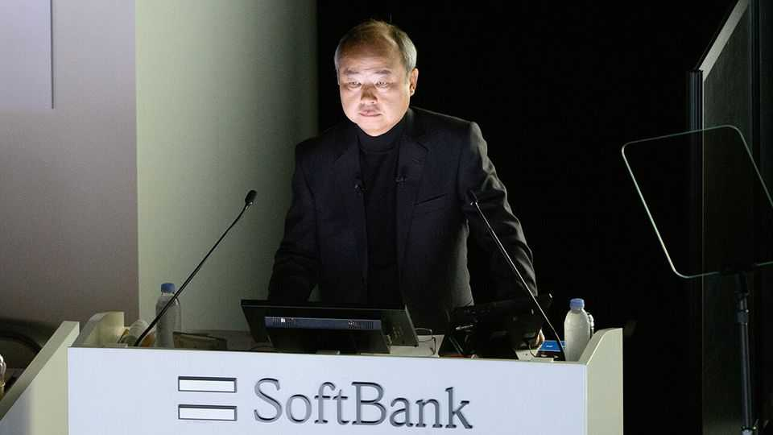
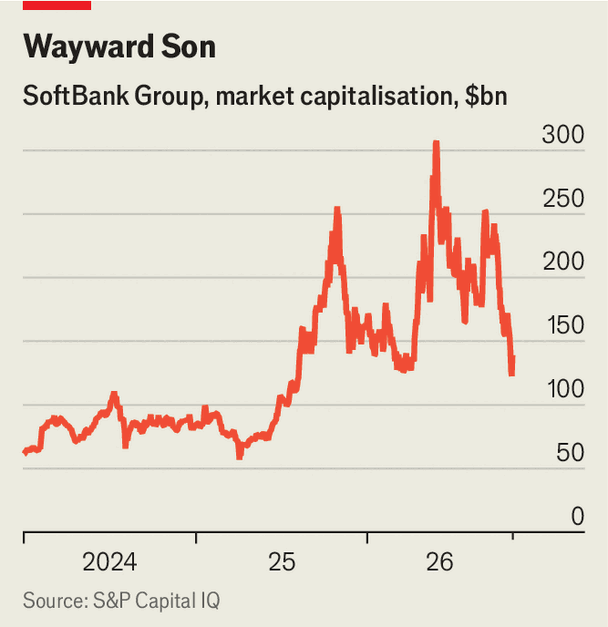

Everything is going wrong for SoftBank
Masayoshi Son’s all-in bet on AI is looking shaky

Nov 12th 2026
At the start of the summer, the outlook was sunny for SoftBank and its swashbuckling boss, Masayoshi Son. The giant investment firm briefly toppled Toyota as Japan’s most valuable company. At the end of June the net value of its assets reached ¥72.3trn ($445bn), an increase of 80% in just three months thanks to gains in its artificial-intelligence holdings. Mr Son crowed that investors had once again underestimated SoftBank (and himself), likening his creation to a goose laying golden eggs: “What matters is not the eggs. It is the goose itself.”
The period since has not been a fertile one. By early August the net value of SoftBank’s assets had dropped to ¥58.3trn, as the share prices of many of its big investments tumbled. From its peak in June, SoftBank’s market capitalisation has fallen by more than half (see chart); it now ranks only ninth in the Japanese league. Analysts had expected the firm to report a modest profit in the most recent quarter, but on November 10th the company disclosed a $7bn loss, much of it the result of write-downs linked to its American data-centre investments. Mr Son’s eggs look less golden than cracked.

To understand what has gone wrong, consider the four elements of SoftBank’s bet on AI: semiconductors, models, robotics and infrastructure. One of SoftBank’s biggest holdings is its stake of about 90% in Arm, a British company that made its name creating blueprints for chips in smartphones and other gadgets. Now Arm is pushing into selling its own silicon for use in AI data centres. Investors are worried that royalties from its original business will slow faster than new profits can replace them. Such concerns have sent Arm’s stock down by more than 50% since mid-June. In the same period shares in Intel, an American chipmaker and another of SoftBank’s investments, have also fallen by more than half.
Turn next to Mr Son’s $65bn bet on OpenAI. The model-maker has delayed its plans for a public share offering, allowing its arch-rival Anthropic, which set its price range on November 10th, to beat it to the stock market. That will slow any payout for SoftBank, which borrowed vast sums to invest in OpenAI. Analysts estimate that the ratio of SoftBank’s debts to the value of its assets has risen from 16% at the end of September to somewhere between 20% and 25%, SoftBank’s self-imposed notional maximum. Some expect it to hit 28% by March. That has made lenders twitchy. This month spreads on SoftBank’s five-year credit-default swaps hit a four-year high, implying a 31% probability of it being unable to service its borrowings.
Another of Mr Son’s debt-fuelled bids, to buy the robotics arm of ABB, a European machinery-maker, is also in peril. This month regulators in China, the division’s biggest market, blocked the sale of the local business to SoftBank. They are said to be uncomfortable with the prospect of Mr Son harvesting data from ABB’s machines to help OpenAI and others train models. SoftBank and ABB are exploring whether a carve-out of the Chinese business would salvage the deal, though doing so would make the purchase less worthwhile.
Last, and the latest to run into trouble, is SoftBank’s investment in AI infrastructure. This includes what will, if built, be one of the world’s largest data centres, a ten-gigawatt project in Ohio for which OpenAI is the primary tenant. Yet having rushed to nail down contracts for its data centres, SoftBank has cancelled reservations for power-generation equipment, taking a $3.7bn writedown.
The company has given few details about the written-down kit, other than to deny that it was related to the project in Ohio. But the situation suggests that SoftBank may be rethinking its broader ambitions. Part of what lies behind the recent market turmoil surrounding AI is a change in the political wind. Several victorious Democratic candidates in America’s elections this month, including the next governor of Ohio, campaigned aggressively against data-centre development.
Mr Son is not alone in having staked his firm and his reputation on AI. He may yet be vindicated, if Arm’s data-centre business takes off or OpenAI’s listing is a roaring success. He and his firm have suffered setbacks—and staged comebacks—before. As a new chapter in the AI fable unfolds, will the goose produce once again? ■